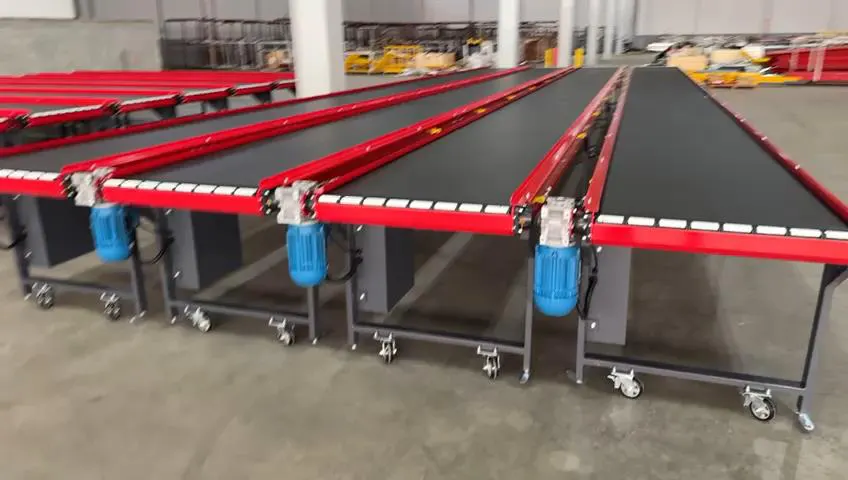
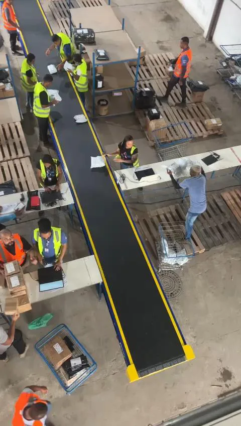
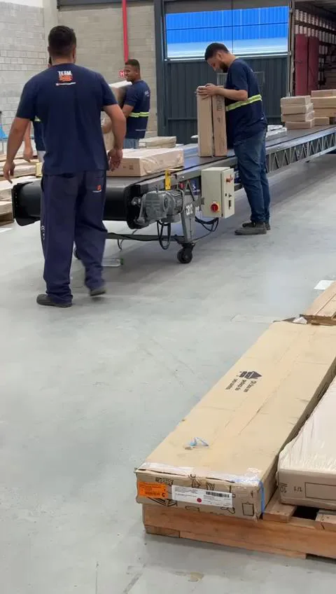
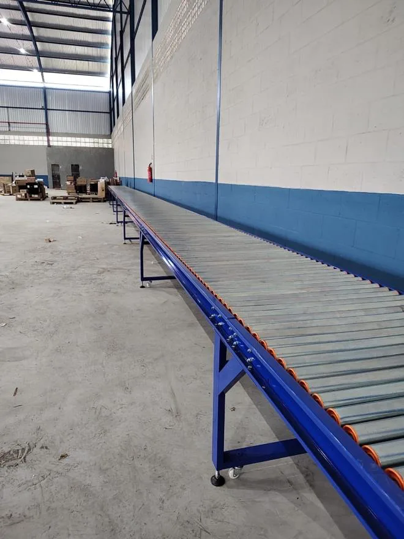
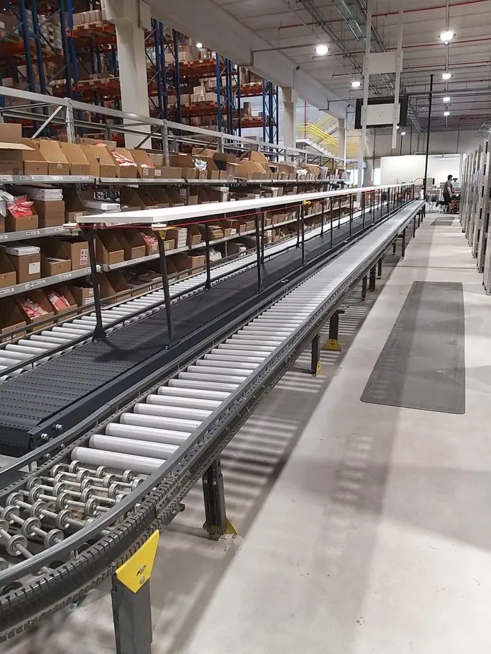
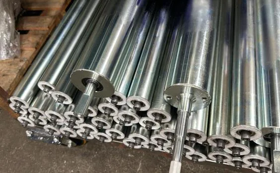
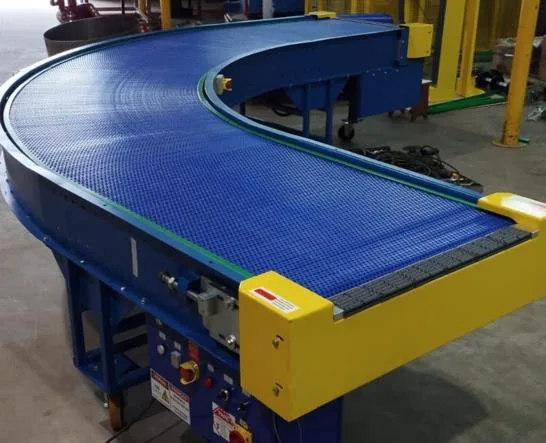
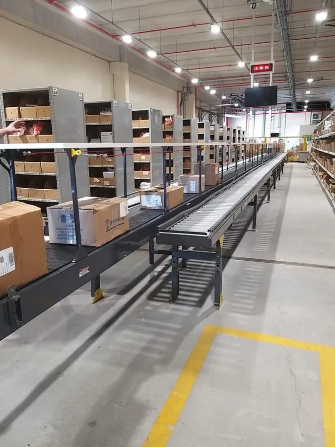
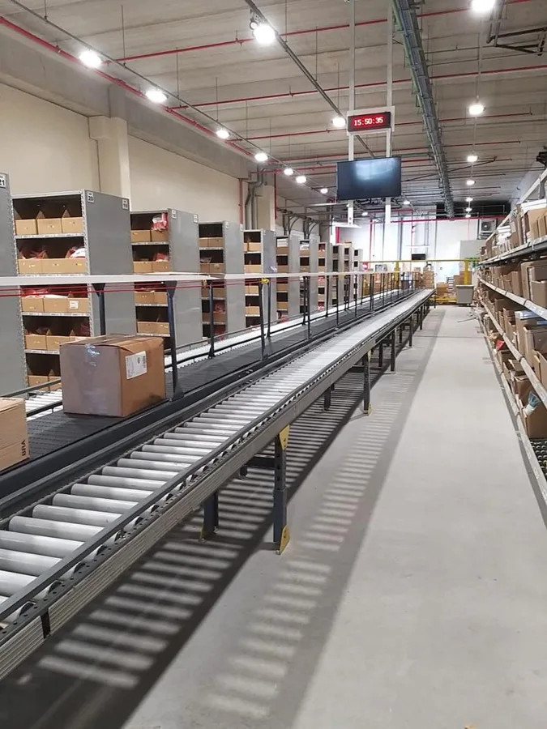
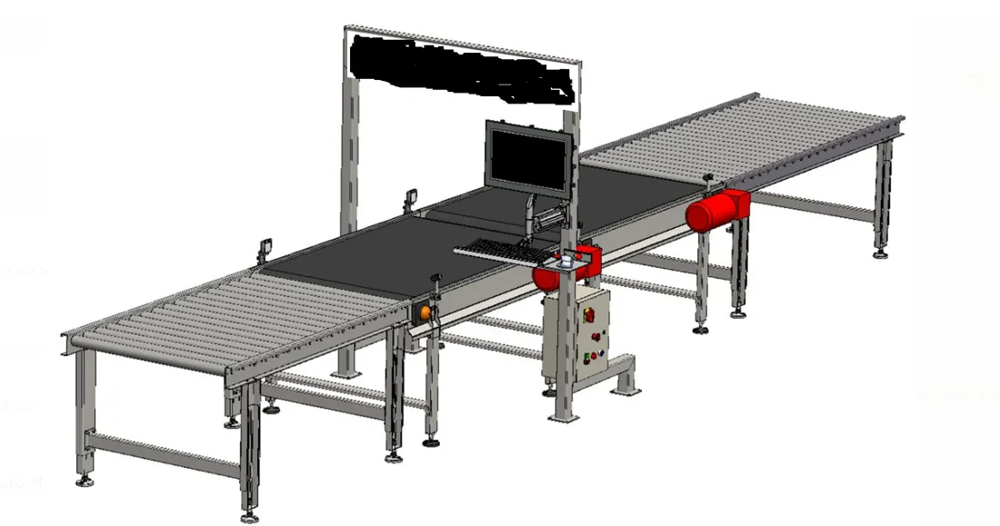

Lona, roletes ou modular. A esteira certa para cada carga.
Estrutura em aço carbono com pintura eletrostática, acionamento por motorredutor WEG e cordão de emergência ao longo das laterais. Comprimento, largura e curvas são definidos no projeto.



Transportador de lona
Lona: triagem, carga e objetos pesados.
Aceita trechos retos, aclive, declive e curvas em sentido único, com acessórios como taliscas e canecas. Disponível em versão reta de 12 metros com pés de rodízios e transferência roletada nas duas pontas.
Estrutura em chapa de aço carbono de 2,65 mm com pintura eletrostática
Cama de chapa galvanizada intercalada por roletes livres com canal de guia
Motor WEG, redutor IBR e inversores de frequência WEG
Cordão de emergência nas laterais e tomadas 220 V a cada 3 metros
Chave seccionadora geral com bloqueio de abertura (NR10)



Transportador de roletes
Roletes: manutenção baixa e comprimento livre.
Para volumes de base firme, em trechos retos, declives e curvas. É a opção de menor custo de manutenção da linha.
Larguras de 50 a 1.300 mm, com ajuste de 1 em 1 mm
Curvas em sentido único e em sentidos opostos
Comprimento livre, definido pelo layout
Vida útil média dos componentes de 4 a 5 anos



Transportador modular
Modular: picking, curvas e linhas longas.
Esteira plástica modular Ibraflex, parceira premium da Exact. Faz curvas contínuas e linhas longas de picking em centros de distribuição de e-commerce.
Linhas de picking com estações de separação ao longo do corredor
Curvas contínuas no mesmo transportador
Versão de carga e descarga que entra no caminhão
Lona ou roletes: qual atende a sua linha
Característica
Lona
Roletes
Larguras disponíveis
25 a 1.200 mm
50 a 1.300 mm
Incremento de largura
25 mm
1 mm
Vida útil média
3 a 4 anos (esteira)
4 a 5 anos (componentes)
Custo de manutenção
Moderado a alto
Baixo
Acessórios (taliscas, canecas)
Sim
Não
Aclive
Sim
Não recomendado
Declive
Sim
Sim
Curvas
Sentido único
Sentido único e opostos
Comprimento máximo
Depende da aplicação
Livre
Valores de referência do catálogo Exact. As medidas finais são definidas no projeto de cada linha.
Cubagem: medir, pesar e ler sem parar a linha.
Duas formas de transformar cada volume em dado: dinâmica, dentro da esteira, ou estática, na bancada. Nas duas, a medida vai direto para o seu sistema.

Cubagem dinâmica
Advanced Laser
Dimensionador a laser sobre transportador, com balança e leitora automática de código de barras. Mede objetos irregulares com a linha em movimento.
Produtividade
até 2.200 pacotes/h
Peso
200 g a 80 kg
Objetos (A×L×C)
3×5×5 a 100×90×140 cm
Balança
1.500 mm
Leitura de código
Automática, 1 face
Tipo de objeto
Irregular
Área de instalação
25 m²
Máquina (A×L×C)
290×130×650 cm
Integração
Webservice
Energia e rede
220 V bifásico, cabeada
Cubagem estática
SmartCubo Standard
Equipamento de bancada com tecnologia embarcada e alta capacidade de processamento, desenvolvido para minimizar erros e reduzir custos operacionais.
Balança de pesagem homologada pelo INMETRO
Sensores ultrassônicos para uma aferição mais precisa
Integração com quaisquer sistemas do mercado
Integração de dados
Cada medida vira dado no seu sistema.
Integração padrão via webservice com ERP, WMS ou TMS. Cada volume chega ao sistema com altura, largura, comprimento, peso e código lido, e o frete passa a ser calculado pelo peso cubado real.
Registro de quando e onde cada caixa foi medida
Rota definida para o sorter a partir do código lido
PC industrial com Windows 10 controlando o equipamento